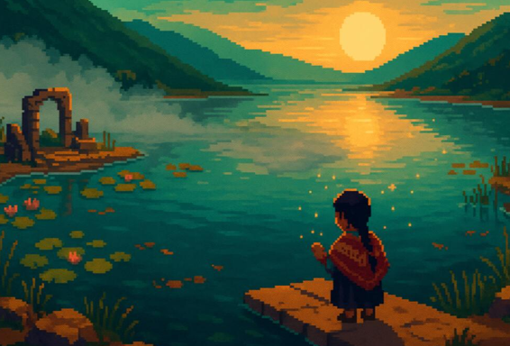
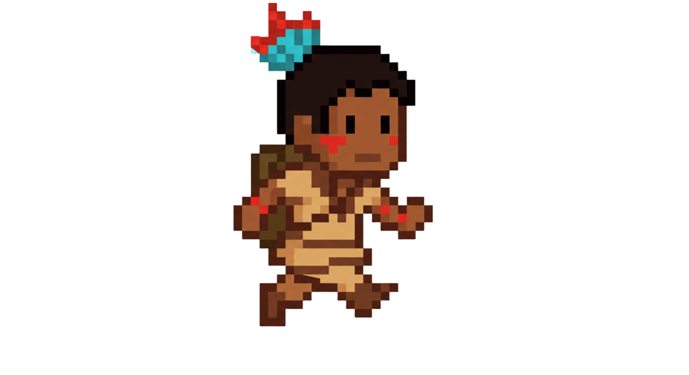
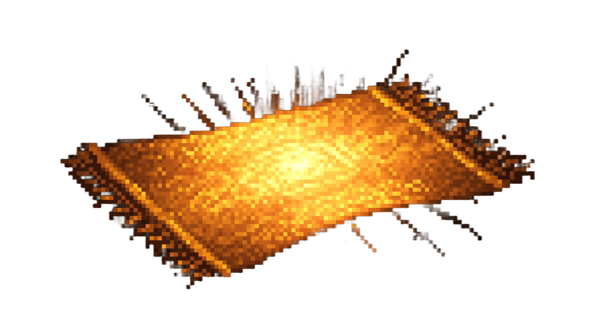
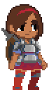

Una aventura entre luz y memoria
Amanecer de los Andes es una aventura 2D de exploración y narrativa inspirada en las mitologías andinas. Acompaña a Mika, una joven guardiana del valle, mientras busca restaurar las Fibras del Sol, tejidos que guardan la memoria de las especies y tradiciones perdidas. Cada hilo es un fragmento de historia, y cada amanecer, una promesa de renacer.

Explora, Canta y Teje

Explora ecosistemas y comunidades vivientes
Viaja a través de valles, bosques y ruinas, cada uno lleno de vida y secretos por descubrir.
Teje patrones de luz
Derrota a los enemigos de la niebla para poder restaurar la luz del valle.
Sigue el rastro
Mientras buscas los fragmentos que la niebla robo, sigue su rastro con los enemigos que este deja a su paso.

Descubre las Fibras del Sol
Reúne fragmentos de memoria y revive la historia del valle y sus guardianas olvidadas.
Personajes

Mika, la Guardiana del Valle
Guiada por las voces antiguas, Mika emprende un viaje para restaurar las Fibras del Sol y devolver el color a su mundo.

La Niebla
Entidad ancestral que roba color y memoria al valle. Nacida del olvido y el desequilibrio, se alimenta del silencio y de la pérdida de conexión con la naturaleza.